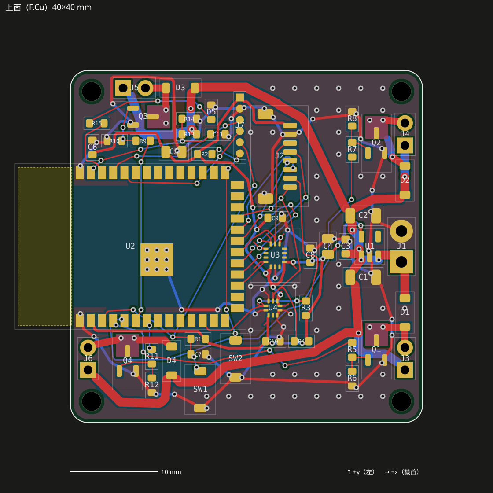
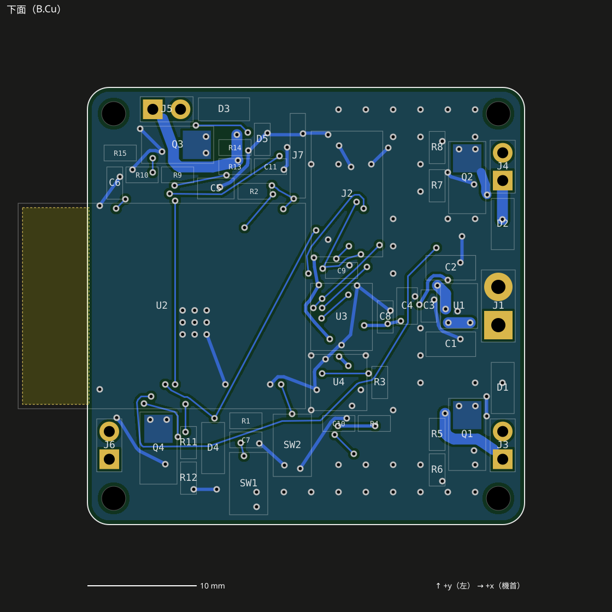
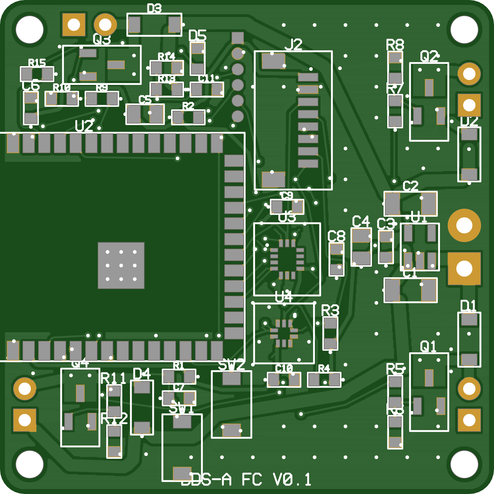
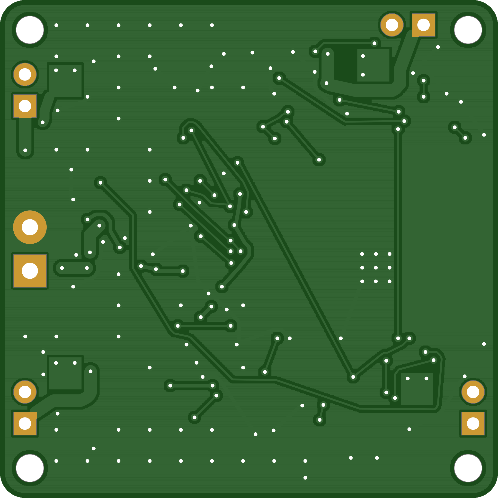
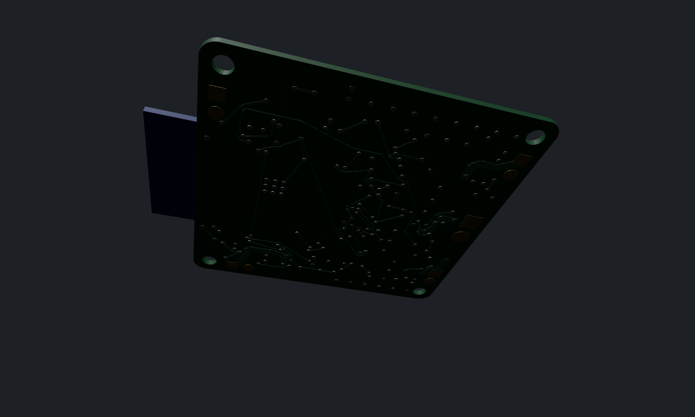
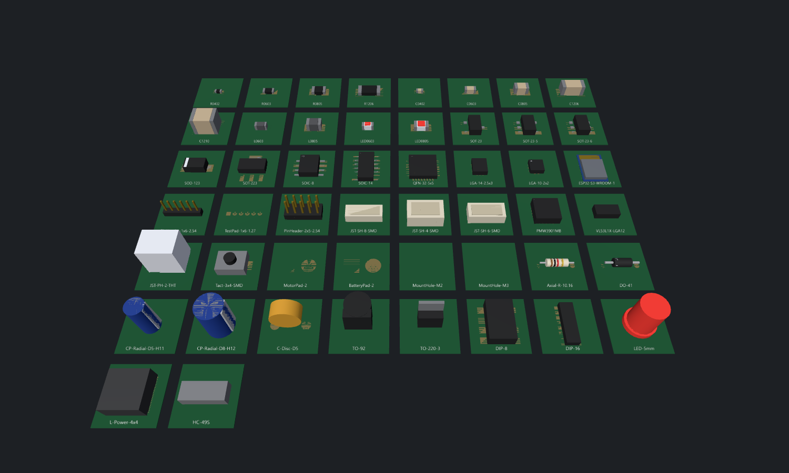
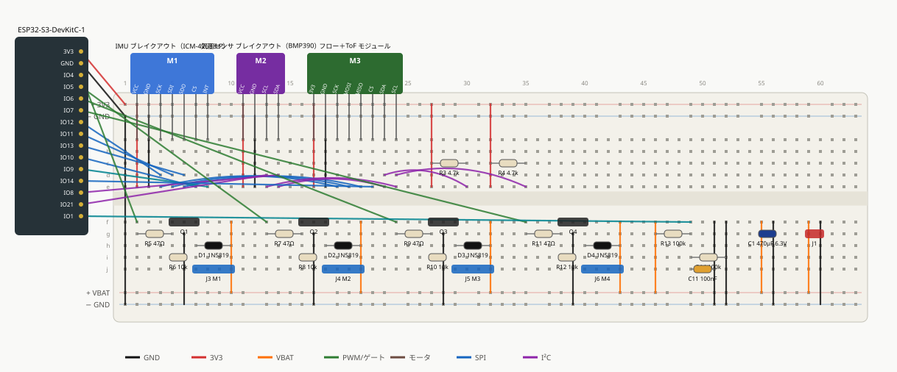
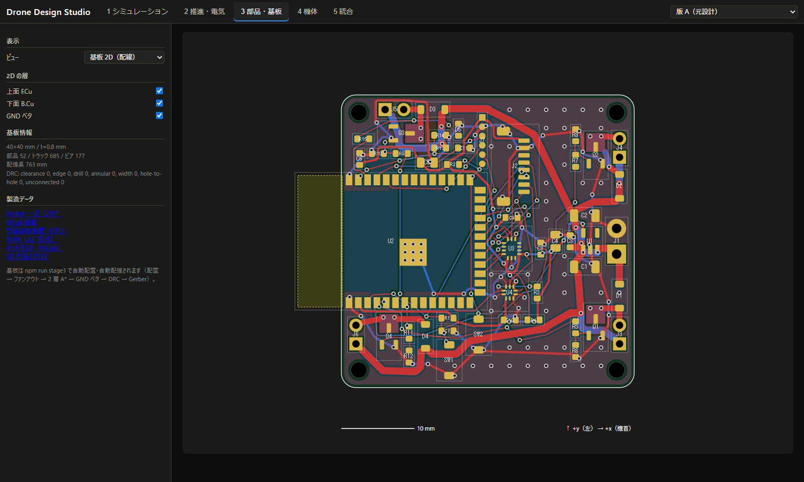

ゴール判定
| ID | ゴール | 合格基準 | 結果 | 判定 |
|---|---|---|---|---|
| G3-1 | 部品カタログ対応 | BOM 全部品が寸法・重量を持ち、購入品は購入先リンクを持つ | 22 品目中 寸法/重量 22、購入先 18/18 | ✔ 合格 |
| G3-2 | 3D モデル | 使用する全パッケージの 3D モデルを生成 | 使用 17 種すべて生成、アーカイブ 50 種 | ✔ 合格 |
| G3-3 | 全ネット配線 | 未配線 0 | 未配線 0（トラック 685 本、ビア 177 個） | ✔ 合格 |
| G3-4 | DRC | クリアランス・線幅・穴径・基板端・穴間・導通の違反 0 | 違反 0（検査ペア 109,613） | ✔ 合格 |
| G3-5 | 製造データ | Gerber 7 層＋ドリル 2 ファイルを出力し、独立パーサで構文エラー 0 | 9 ファイル、構文エラー 0 | ✔ 合格 |
| G3-6 | ブレッドボード配置 | 列の衝突・未導通・誤接続 0 | ✓衝突 0、✓重複 0、✓範囲外 0、✓ネット 24 本すべて導通、✓誤接続 0 | ✔ 合格 |
基板設計の流れ
- 配置: 取付穴・無線モジュール（アンテナを基板外へ張り出し）・電池パッド・モータパッド（各アームの方向）を固定し、残りを接続先への距離が最小になる位置へ 4 方向の回転を試しながら貪欲配置。デカップリングは対応 IC の近くへ。
- ファンアウト: 0.5 mm ピッチの LGA（IMU・気圧センサ）は各ピンを外側へ扇状に引き出してから配線（中央のピンから順に配線して囲い込みを防ぐ）。センサ直下は配線・ビア禁止。
- 配線: 0.05 mm グリッドの 2 層 A*。他ネット銅箔＋クリアランスの距離変換で線幅ぶん膨張させて通行判定し、層変更はビア（コスト付き）。見通し判定で経路を短縮。
- GND: GND 島を配線で連結 → 両面ベタ → スティッチングビア（2.5 mm 格子）→ 電池 GND に繋がらない孤島を削除。MOSFET ドレインには放熱銅箔＋サーマルビア、モジュールの EPAD にはサーマルビア 9 本。
- DRC: ラスタではなく厳密な幾何（線分・円・矩形の距離）で全銅箔ペアを検査し、導通は union-find で確認。
- 試行: 基板寸法 × GND 戦略 × リップアップ（失敗ネットを優先して再配線）を順に試し、最初に全合格した案を採用。
試行の繰り返し（配置・配線）
| 試行 | 基板 | GND 戦略 | 優先ネット | 未配線 | DRC 違反 | トラック | ビア | 時間 [ms] | 結果 |
|---|---|---|---|---|---|---|---|---|---|
| 1 | 38×38 | tree-first | — | 1 | 1 | 642 | 160 | 4698 | SPI_MISO: 未接続: U3.1 / DRC unconnected 1 |
| 2 | 38×38 | tree-first | SPI_MISO | 1 | 1 | 602 | 161 | 4775 | I2C_SDA: 未接続: U4.4 / DRC unconnected 1 |
| 3 | 38×38 | split | — | 7 | 3 | 701 | 155 | 7200 | SPI_MISO: 未接続: U3.1 / PWM2: 未接続: R7.1 / GND: 未接続: U4.5, U4.8, U4.9, J2.MP2 / GND: ベタに接続されない GND パッド U4.5 |
| 4 | 38×38 | split | SPI_MISO, PWM2 | 3 | 1 | 716 | 159 | 7705 | GND: 未接続: U4.3, C5.2 / GND: ベタに接続されない GND パッド U4.3 / GND: ベタに接続されない GND パッド C5.2 / DRC unconnected 1 |
| 5 | 38×38 | first | — | 7 | 3 | 701 | 155 | 7529 | SPI_MISO: 未接続: U3.1 / PWM2: 未接続: R7.1 / GND: 未接続: U4.5, U4.8, U4.9, J2.MP2 / GND: ベタに接続されない GND パッド U4.5 |
| 6 | 38×38 | first | SPI_MISO, PWM2 | 3 | 1 | 716 | 159 | 7403 | GND: 未接続: U4.3, C5.2 / GND: ベタに接続されない GND パッド U4.3 / GND: ベタに接続されない GND パッド C5.2 / DRC unconnected 1 |
| 7 | 40×40 | tree-first | — | 1 | 1 | 696 | 182 | 4789 | PWM2: 未接続: R7.1 / DRC unconnected 1 |
| 8 | 40×40 | tree-first | PWM2 | 1 | 1 | 671 | 194 | 4954 | SPI_MOSI: 未接続: U3.14 / DRC unconnected 1 |
| 9 | 40×40 | split | — | 1 | 1 | 679 | 165 | 4831 | PWM3: 未接続: R9.1 / DRC unconnected 1 |
| 10 | 40×40 | split | PWM3 | 0 | 0 | 685 | 177 | 5078 | 成功 |
基板（生成データ）


| 項目 | 値 |
|---|---|
| 配線長合計 | 763 mm |
| ビア | thermal: 17、gnd: 35、route: 84、stitch: 41 |
| GND ベタ面積 | 上面 623 mm²、下面 1221 mm² |
| ネックダウン（細線化） | なし |
| 設計ルール | クリアランス 0.15 mm、信号線 0.15 mm、3.3 V 0.3 mm、モータ 0.8 mm、VBAT 1 mm、ビア φ0.6/0.3 mm |
| 基板質量（推定） | 3.37 g（部品込み電子回路 6.84 g） |
Gerber からの独立レンダリング（tracespace）
出力した Gerber / Excellon を tracespace（MIT）の pcb-stackup で描画した結果。自作レンダラとは独立なので、ファイル自体の正しさの確認になる。


| ファイル | 解析オブジェクト数 | 警告 | エラー |
|---|---|---|---|
| drone_fc-F_Cu.gtl | 16253 | block "%TF.GenerationSoftware,DroneDesignStudio,drone-design-studio,0.1" was not recognized and was ignored / block "%TF.FileFunction,Copper,L1,Top" was not recognized and was ignored / block "%TF.FilePolarity,Positive" was not recognized and was ignored | 0 |
| drone_fc-B_Cu.gbl | 18023 | block "%TF.GenerationSoftware,DroneDesignStudio,drone-design-studio,0.1" was not recognized and was ignored / block "%TF.FileFunction,Copper,L2,Bot" was not recognized and was ignored / block "%TF.FilePolarity,Positive" was not recognized and was ignored | 0 |
| drone_fc-F_Mask.gts | 260 | block "%TF.GenerationSoftware,DroneDesignStudio,drone-design-studio,0.1" was not recognized and was ignored / block "%TF.FileFunction,Soldermask,Top" was not recognized and was ignored / block "%TF.FilePolarity,Negative" was not recognized and was ignored | 0 |
| drone_fc-B_Mask.gbs | 36 | block "%TF.GenerationSoftware,DroneDesignStudio,drone-design-studio,0.1" was not recognized and was ignored / block "%TF.FileFunction,Soldermask,Bot" was not recognized and was ignored / block "%TF.FilePolarity,Negative" was not recognized and was ignored | 0 |
| drone_fc-F_Paste.gtp | 230 | block "%TF.GenerationSoftware,DroneDesignStudio,drone-design-studio,0.1" was not recognized and was ignored / block "%TF.FileFunction,Paste,Top" was not recognized and was ignored / block "%TF.FilePolarity,Positive" was not recognized and was ignored | 0 |
| drone_fc-F_Silkscreen.gto | 1783 | block "%TF.GenerationSoftware,DroneDesignStudio,drone-design-studio,0.1" was not recognized and was ignored / block "%TF.FileFunction,Legend,Top" was not recognized and was ignored / block "%TF.FilePolarity,Positive" was not recognized and was ignored | 0 |
| drone_fc-Edge_Cuts.gm1 | 80 | block "%TF.GenerationSoftware,DroneDesignStudio,drone-design-studio,0.1" was not recognized and was ignored / block "%TF.FileFunction,Profile,NP" was not recognized and was ignored / block "%TF.FilePolarity,Positive" was not recognized and was ignored | 0 |
| drone_fc-PTH.drl | 196 | zero suppression missing; detected leading suppression | 0 |
| drone_fc-NPTH.drl | 9 | zero suppression missing; assuming trailing suppression | 0 |
層の自動判別（whats-that-gerber）: drone_fc-F_Cu.gtl → top/copper、drone_fc-B_Cu.gbl → bottom/copper、drone_fc-F_Mask.gts → top/soldermask、drone_fc-B_Mask.gbs → bottom/soldermask、drone_fc-F_Paste.gtp → top/solderpaste、drone_fc-F_Silkscreen.gto → top/silkscreen、drone_fc-Edge_Cuts.gm1 → all/outline、drone_fc-PTH.drl → all/drill、drone_fc-NPTH.drl → all/drill
入稿ファイル: out/stage3/drone_fc_gerber.zip（JLCPCB / PCBWay / Elecrow など）、部品実装用: drone_fc_bom_jlc.csv、drone_fc_cpl.csv、KiCad で開いて修正: drone_fc.kicad_pcb（GND ゾーンは B キーで再充填）
実装済み基板の 3D


部品カタログ対応（BOM → 製品）
| 参照 | 数 | 型番 | メーカ | パッケージ | 寸法 L×W×H [mm] | 質量 [g] | 3D | 代替 | 購入先 | 要確認 |
|---|---|---|---|---|---|---|---|---|---|---|
| C1, C2 | 2 | GRM31CR60J476ME19L | Murata | C1206 | 3.2×1.6×1.6 | 0.030 | ✓ | 2 | Digi-Key Mouser LCSC 秋月電子 スイッチサイエンス | |
| C3, C7 | 2 | GRM188R61A105KA61D | Murata | C0603 | 1.6×0.8×0.8 | 0.005 | ✓ | 2 | Digi-Key Mouser LCSC 秋月電子 スイッチサイエンス | |
| C4, C5 | 2 | GRM21BR61A106KE19L | Murata | C0805 | 2×1.25×1.25 | 0.012 | ✓ | 2 | Digi-Key Mouser LCSC 秋月電子 スイッチサイエンス | |
| C6, C8, C9, C10, C11 | 5 | GRM188R71C104KA01D | Murata | C0603 | 1.6×0.8×0.8 | 0.005 | ✓ | 2 | Digi-Key Mouser LCSC 秋月電子 スイッチサイエンス | |
| D1, D2, D3, D4 | 4 | B5819W | 各社（汎用品） | SOD-123 | 2.7×1.6×1.1 | 0.010 | ✓ | 2 | Digi-Key Mouser LCSC 秋月電子 スイッチサイエンス | |
| D5 | 1 | APT1608EC | Kingbright | LED0603 | 1.6×0.8×0.75 | 0.003 | ✓ | 1 | Digi-Key Mouser LCSC 秋月電子 スイッチサイエンス | |
| H1, H2, H3, H4 | 4 | — | — | MountHole-M2 | 4×4×0 | 0.000 | ✓ | 0 | — | |
| J1 | 1 | — | — | BatteryPad-2 | 6×3×0 | 0.000 | ✓ | 1 | — | |
| J2 | 1 | SM08B-SRSS-TB(LF)(SN) | J.S.T. Mfg. | JST-SH-8-SMD | 10×4.25×2.9 | 0.100 | ✓ | 1 | Digi-Key Mouser LCSC 秋月電子 スイッチサイエンス | |
| J3, J4, J5, J6 | 4 | — | — | MotorPad-2 | 4×2×0 | 0.000 | ✓ | 0 | — | |
| J7 | 1 | — | — | TestPad-1x6-1.27 | 7.6×1.2×0 | 0.000 | ✓ | 1 | — | |
| Q1, Q2, Q3, Q4 | 4 | AO3400A | Alpha & Omega Semiconductor | SOT-23 | 2.9×1.3×1 | 0.008 | ✓ | 2 | Digi-Key Mouser LCSC 秋月電子 スイッチサイエンス | |
| R1, R2, R6, R8, R10, R12 | 6 | RC0603FR-0710KL | Yageo | R0603 | 1.6×0.8×0.45 | 0.002 | ✓ | 2 | Digi-Key Mouser LCSC 秋月電子 スイッチサイエンス | |
| R3, R4 | 2 | RC0603FR-074K7L | Yageo | R0603 | 1.6×0.8×0.45 | 0.002 | ✓ | 2 | Digi-Key Mouser LCSC 秋月電子 スイッチサイエンス | |
| R5, R7, R9, R11 | 4 | RC0603FR-0747RL | Yageo | R0603 | 1.6×0.8×0.45 | 0.002 | ✓ | 2 | Digi-Key Mouser LCSC 秋月電子 スイッチサイエンス | |
| R13, R14 | 2 | RC0603FR-07100KL | Yageo | R0603 | 1.6×0.8×0.45 | 0.002 | ✓ | 2 | Digi-Key Mouser LCSC 秋月電子 スイッチサイエンス | |
| R15 | 1 | RC0603FR-071KL | Yageo | R0603 | 1.6×0.8×0.45 | 0.002 | ✓ | 2 | Digi-Key Mouser LCSC 秋月電子 スイッチサイエンス | |
| SW1, SW2 | 2 | TS-1187A-B-A-B | XKB Connection | Tact-3x4-SMD | 4×3×2.5 | 0.050 | ✓ | 1 | Digi-Key Mouser LCSC 秋月電子 スイッチサイエンス | |
| U1 | 1 | XC6220B331MR-G | Torex | SOT-23-5 | 2.9×1.6×1.1 | 0.015 | ✓ | 2 | Digi-Key Mouser LCSC 秋月電子 スイッチサイエンス | SOT-25 のピン配置（VIN/VSS/CE/NC/VOUT） |
| U2 | 1 | ESP32-S3-WROOM-1-N8 | Espressif Systems | ESP32-S3-WROOM-1 | 18×25.5×3.1 | 3.000 | ✓ | 3 | Digi-Key Mouser LCSC 秋月電子 スイッチサイエンス | モジュール寸法とパッド位置（1.27 mm ピッチ）、アンテナ禁止領域 |
| U3 | 1 | ICM-42688-P | TDK InvenSense | LGA-14-2.5x3 | 2.5×3×0.91 | 0.020 | ✓ | 2 | Digi-Key Mouser LCSC 秋月電子 スイッチサイエンス | ピン番号と RESV ピンの処理、推奨デカップリング容量 |
| U4 | 1 | BMP390 | Bosch Sensortec | LGA-10-2x2 | 2×2×0.75 | 0.010 | ✓ | 2 | Digi-Key Mouser LCSC 秋月電子 スイッチサイエンス | ピン配置と通気穴の向き |
3D 部品アーカイブ

保存先: out/parts3d/*.stl と catalog.json。寸法を入れ替えれば同系統の任意部品を生成できる（パラメトリック）。
| ID | 系統 | 説明 | 規格・出典 | パッド数 | 外形 [mm] | 高さ [mm] | 要確認 |
|---|---|---|---|---|---|---|---|
| R0402 | chip | チップ抵抗 0402（メートル 1005） | EIA 0402 / IPC-7351 nominal | 2 | 2.06×1.14 | 0.35 | |
| R0603 | chip | チップ抵抗 0603（メートル 1608） | EIA 0603 / IPC-7351 nominal | 2 | 2.95×1.45 | 0.45 | |
| R0805 | chip | チップ抵抗 0805（メートル 2013） | EIA 0805 / IPC-7351 nominal | 2 | 3.35×1.9 | 0.60 | |
| R1206 | chip | チップ抵抗 1206（メートル 3216） | EIA 1206 / IPC-7351 nominal | 2 | 4.55×2.25 | 0.60 | |
| C0402 | chip | 積層セラミックコンデンサ 0402（メートル 1005） | EIA 0402 / IPC-7351 nominal | 2 | 2.06×1.14 | 0.50 | |
| C0603 | chip | 積層セラミックコンデンサ 0603（メートル 1608） | EIA 0603 / IPC-7351 nominal | 2 | 2.95×1.45 | 0.80 | |
| C0805 | chip | 積層セラミックコンデンサ 0805（メートル 2013） | EIA 0805 / IPC-7351 nominal | 2 | 3.35×1.9 | 1.25 | |
| C1206 | chip | 積層セラミックコンデンサ 1206（メートル 3216） | EIA 1206 / IPC-7351 nominal | 2 | 4.55×2.25 | 1.60 | |
| C1210 | chip | 積層セラミックコンデンサ 1210（メートル 3225） | EIA 1210 / IPC-7351 nominal | 2 | 4.55×3.15 | 2.50 | |
| L0603 | chip | チップインダクタ 0603（メートル 1608） | EIA 0603 / IPC-7351 nominal | 2 | 2.95×1.45 | 0.80 | |
| L0805 | chip | チップインダクタ 0805（メートル 2013） | EIA 0805 / IPC-7351 nominal | 2 | 3.35×1.9 | 1.25 | |
| LED0603 | chip | チップ LED 0603（メートル 1608） | EIA 0603 / IPC-7351 nominal | 2 | 2.95×1.45 | 0.85 | |
| LED0805 | chip | チップ LED 0805（メートル 2013） | EIA 0805 / IPC-7351 nominal | 2 | 3.35×1.9 | 0.90 | |
| SOT-23 | sot | SOT-23 小型トランジスタ/IC パッケージ | JEDEC TO-236 / MO-178, IPC-7351 nominal | 3 | 4.1×3.4 | 1.10 | |
| SOT-23-5 | sot | SOT-23-5 小型トランジスタ/IC パッケージ | JEDEC TO-236 / MO-178, IPC-7351 nominal | 5 | 4.1×3.4 | 1.10 | |
| SOT-23-6 | sot | SOT-23-6 小型トランジスタ/IC パッケージ | JEDEC TO-236 / MO-178, IPC-7351 nominal | 6 | 4.1×3.4 | 1.10 | |
| SOD-123 | diode | SOD-123 小型ダイオード（1 番ピン＝カソード） | JEDEC SOD-123, IPC-7351 nominal | 2 | 4.68×2.1 | 1.17 | |
| SOT-223 | sot | SOT-223 電源用（LDO・MOSFET 等、タブ付き） | JEDEC TO-261, IPC-7351 nominal | 4 | 7×8.8 | 1.70 | |
| SOIC-8 | soic | SOIC-8 表面実装 IC | JEDEC MS-012, IPC-7351 nominal | 8 | 7.45×5.31 | 1.57 | |
| SOIC-14 | soic | SOIC-14 表面実装 IC | JEDEC MS-012, IPC-7351 nominal | 14 | 7.45×9.12 | 1.57 | |
| QFN-32-5x5 | qfn | QFN-32 5×5 mm（中央に放熱パッド） | JEDEC MO-220, IPC-7351 nominal | 33 | 6.5×6.5 | 0.92 | |
| LGA-14-2.5x3 | lga | LGA-14 2.5×3.0 mm（6 軸 IMU 系） | メーカー推奨ランドパターン（近似） | 14 | 5.65×6.15 | 0.93 | ⚠ |
| LGA-10-2x2 | lga | LGA-10 2.0×2.0 mm（気圧センサ系） | メーカー推奨ランドパターン（近似） | 10 | 5.15×5.15 | 0.77 | ⚠ |
| ESP32-S3-WROOM-1 | module | ESP32-S3-WROOM-1 無線マイコンモジュール（18×25.5 mm、上端がアンテナ） | Espressif ESP32-S3-WROOM-1 データシート推奨ランド（近似） | 41 | 18.8×26.3 | 3.20 | ⚠ |
| PinHeader-1x6-2.54 | header | ピンヘッダ 1×6 2.54 mm | 2.54 mm (0.1 in) ピッチ汎用 | 6 | 15.74×3.04 | 8.50 | |
| TestPad-1x6-1.27 | pad | テストパッド 1×6（1.27 mm ピッチ、ポゴピン治具用） | SMD 円形パッド φ0.9 mm | 6 | 7.75×1.4 | 0.00 | |
| PinHeader-2x5-2.54 | header | ピンヘッダ 2×5 2.54 mm | 2.54 mm (0.1 in) ピッチ汎用 | 10 | 13.2×5.58 | 8.50 | |
| JST-SH-8-SMD | connector | JST SH 8 ピン 1.0 mm トップ（SMD） | JST SM**B-SRSS-TB 推奨ランド（近似） | 10 | 11.5×6.55 | 3.00 | ⚠ |
| JST-SH-4-SMD | connector | JST SH 4 ピン 1.0 mm トップ（SMD） | JST SM**B-SRSS-TB 推奨ランド（近似） | 6 | 7.5×6.55 | 3.00 | ⚠ |
| JST-SH-6-SMD | connector | JST SH 6 ピン 1.0 mm トップ（SMD） | JST SM**B-SRSS-TB 推奨ランド（近似） | 8 | 9.5×6.55 | 3.00 | ⚠ |
| PMW3901MB | lga | PMW3901MB 系オプティカルフローセンサ 6×6 mm（近似ランド） | メーカー推奨ランドパターン（近似） | 20 | 9.15×9.15 | 2.32 | ⚠ |
| VL53L1X-LGA12 | lga | VL53L1X ToF センサ LGA-12 4.9×2.5 mm（近似ランド） | メーカー推奨ランドパターン（近似） | 12 | 7.9×5.65 | 1.58 | ⚠ |
| JST-PH-2-THT | connector | JST PH 2 ピン 2.0 mm トップ（THT） | JST B*B-PH-K-S | 2 | 6.4×6.8 | 6.00 | |
| Tact-3x4-SMD | switch | タクトスイッチ 3×4 mm（SMD、2 端子） | TS-1187A 系（近似） | 2 | 5.7×3.5 | 2.30 | ⚠ |
| MotorPad-2 | pad | モータ配線用スルーホール 2 極（φ1.0 mm） | 配線直付け用スルーホール | 2 | 4.84×2.3 | 0.00 | |
| BatteryPad-2 | pad | 電池リード直付けパッド 2 極（φ1.3 mm、20 AWG） | 配線直付け用スルーホール | 2 | 6.6×3.1 | 0.00 | |
| MountHole-M2 | mechanical | 取付穴 φ2.2 mm（ノンプレーテッド） | ISO 273 medium（M2 → 2.2 mm） | 1 | 4.2×4.2 | 0.00 | |
| MountHole-M3 | mechanical | 取付穴 φ3.2 mm（ノンプレーテッド） | ISO 273 medium（M2 → 2.2 mm） | 1 | 5.2×5.2 | 0.00 | |
| Axial-R-10.16 | tht-discrete | アキシャル抵抗（1/4 W、本体 6.3×φ2.5 mm、足ピッチ 10.16 mm） | IEC 60062 カラーコード / 0.4 in ピッチ | 2 | 12.26×3.04 | 3.02 | |
| DO-41 | tht-discrete | DO-41 アキシャルダイオード（1N4001/1N5819 等） | JEDEC DO-41 | 2 | 12.26×3.24 | 3.22 | |
| CP-Radial-D5-H11 | tht-discrete | アルミ電解コンデンサ φ5×11 mm（リード間 2 mm） | EIAJ ラジアルリード | 2 | 5.5×5.5 | 11.32 | |
| CP-Radial-D8-H12 | tht-discrete | アルミ電解コンデンサ φ8×12 mm（リード間 3.5 mm） | EIAJ ラジアルリード | 2 | 8.5×8.5 | 12.32 | |
| C-Disc-D5 | tht-discrete | セラミックコンデンサ（円板型 φ5 mm） | ラジアルリード 0.2 in | 2 | 7.18×3 | 7.00 | |
| TO-92 | tht-discrete | TO-92 小信号トランジスタ（2SC1815、2N7000 等） | JEDEC TO-92 | 3 | 5.3×6.1 | 8.00 | |
| TO-220-3 | tht-discrete | TO-220 パワー素子（縦置き、MOSFET・レギュレータ等） | JEDEC TO-220AB | 3 | 10.5×5 | 18.40 | |
| DIP-8 | dip | DIP-8（0.3 in 幅） | JEDEC MS-001 | 8 | 9.72×10.36 | 3.95 | |
| DIP-16 | dip | DIP-16（0.3 in 幅） | JEDEC MS-001 | 16 | 9.72×20.52 | 3.95 | |
| LED-5mm | tht-discrete | 砲弾型 LED φ5 mm | T-1¾ | 2 | 6.3×6.3 | 8.00 | |
| L-Power-4x4 | chip | SMD パワーインダクタ 4×4 mm（DC/DC 用） | メーカー標準サイズ（近似） | 2 | 4.7×4.5 | 2.00 | |
| HC-49S | tht-discrete | 水晶振動子 HC-49/S | HC-49/US | 2 | 11.5×5.1 | 3.50 |
ブレッドボード配置（試作・動作確認用）

| 検証項目 | 判定 | 詳細 |
|---|---|---|
| 同じ列（5 穴）に異なるネットがない | ✔ 合格 | 衝突 0 |
| 同じ穴に 2 本以上挿さない | ✔ 合格 | 重複 0 |
| ボード範囲内（63 列） | ✔ 合格 | 範囲外 0 |
| 全ネットが導通 | ✔ 合格 | ネット 24 本すべて導通 |
| ジャンパ線が他ネットの列に刺さっていない | ✔ 合格 | 誤接続 0 |
| 部材 | 数量 | 備考 |
|---|---|---|
| ブレッドボード 830 穴 | 1 | 電源レール付き |
| ESP32-S3-DevKitC-1 | 1 | ボード外に置きジャンパで接続（3V3 は DevKit の LDO から供給） |
| IMU ブレイクアウト（ICM-42688-P） | 1 | 他社互換品可 |
| BMP390 ブレイクアウト | 1 | DPS310 等でも可（ピン配置を確認） |
| PMW3901＋VL53L1X モジュール | 1 | |
| AO3400A ＋ SOT-23→DIP 変換基板 | 4 | はんだ付けが必要 |
| 1N5819（DO-41） | 4 | 還流ダイオード |
| 抵抗 47Ω / 10k / 4.7k / 100k（1/4 W） | 12 | |
| 電解コンデンサ 470 µF 6.3 V | 1 | ベンチ電源のノイズ対策 |
| コアレスモータ 8520 | 4 | プロペラは外して試験（安全のため） |
| ジャンパ線 | 46 |
UI

懸念点・今後の課題
- IMU（ICM-42688-P）・気圧センサ（BMP390）・ESP32-S3 モジュールのランドパターンは近似。発注前に各データシートの推奨ランドとピン配置を必ず照合すること（カタログの「要確認」欄）。
- 自動配線は全ネット接続と DRC を満たしているが、高速信号（SPI 10 MHz 程度）の等長やリターンパス、モータ電流ループ面積の最小化までは最適化していない。KiCad で目視確認し、必要なら手修正する。
- 無線モジュール直下の上面は配線禁止とし、アンテナは基板外へ張り出させた。フレーム設計（段階4）でアンテナ付近に金属・カーボンを置かないこと。
- VBAT 幹線は 1.0 mm 幅。全開時の分岐電流（最大約 4 A）では温度上昇が 10 °C を超える可能性がある。2 oz 銅箔の指定、または露出させてはんだを盛る対策を推奨。
- GND ベタには THT パッドへのサーマルリリーフを入れていない（手はんだ時に熱が逃げやすい）。
- モジュール EPAD 内のサーマルビアはテンティング前提。リフロー時のはんだ吸い込みが気になる場合はビア充填（有償オプション）を指定する。
- 販売サイトの価格・在庫は取得していない（検索リンクのみ）。
参考にした OSS・資料
| 名称 | ライセンス | 利用方法 |
|---|---|---|
| KiCad 3D models | CC-BY-SA 4.0（設計物例外あり） | 同梱しない。高精度モデルが必要な場合の任意参照先 |
| Freerouting | GPL-3.0 | 取り込まない。外部ツールとして任意利用可能な旨を案内 |
| Ucamco Gerber Format Specification | 公開仕様 | Gerber RS-274X 出力の仕様 |
| SKiDL | MIT | コードで回路を記述しネットリストを生成する手法を参考 |
| three.js | MIT | 3D 描画（依存として取り込み） |
| tracespace（gerber-parser / pcb-stackup） | MIT | 出力 Gerber の独立検証・描画（開発用依存） |